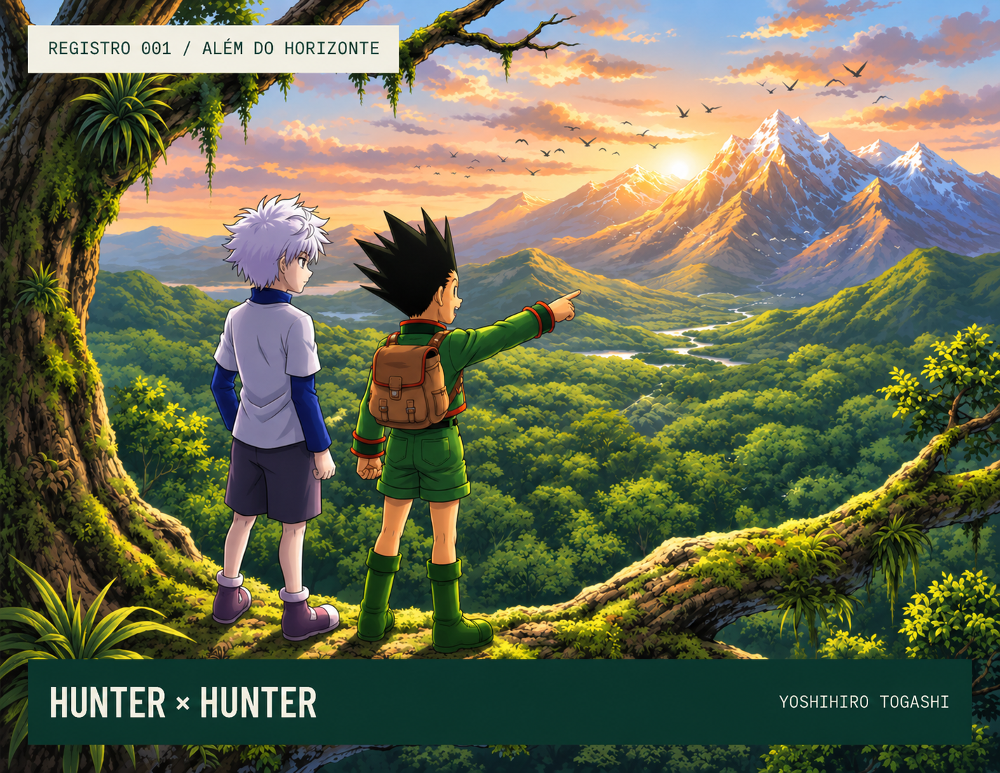
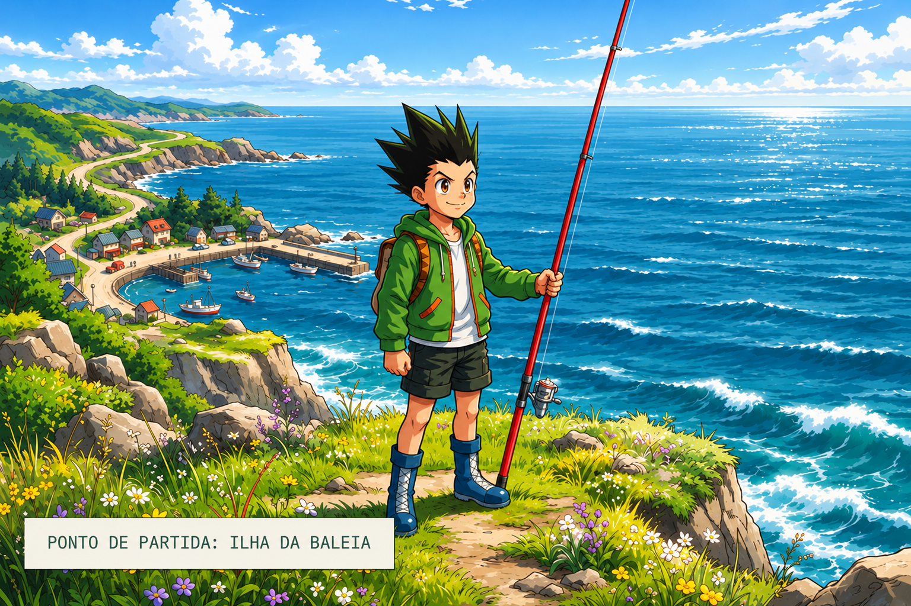
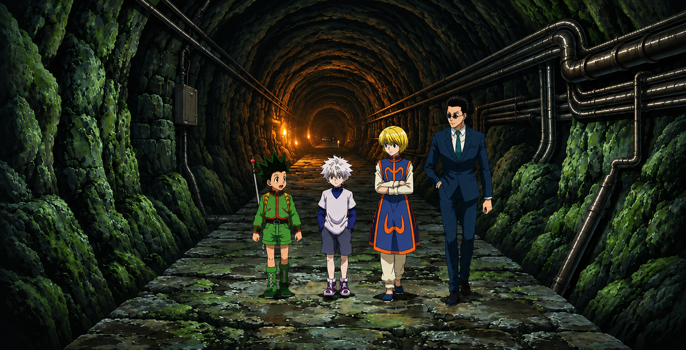
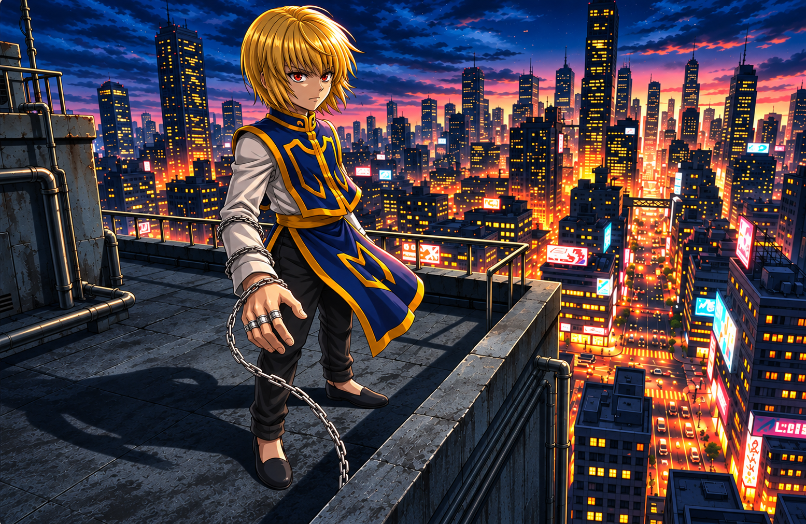
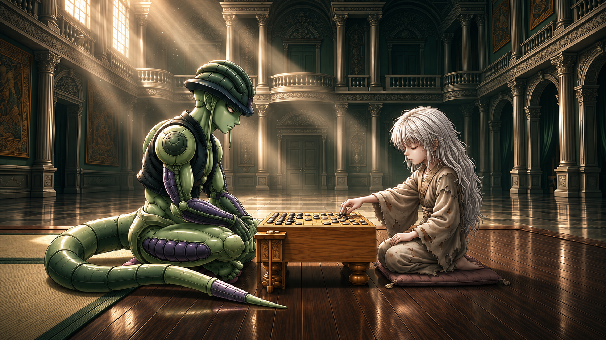

HUNTER x HUNTER / UM UNIVERSO PARA EXPLORAR
O mundo é grande. Sua jornada, maior
De uma pequena ilha a territórios desconhecidos. Explore a obra de Yoshihiro Togashi, descubra curiosidades e encontre seu lugar entre outros fãs. NÃO É SOBRE O DESTINO. É SOBRE QUEM VAI COM VOCÊ
1998
ESTREIA DO MANGÁ2
SÉRIES DE ANIME148
EPISÓDIOS NA SÉRIE DE 2011
UMA OBRA.
INFINITAS DESCOBERTAS.

01 / A OBRA
Uma licença para ir além.
Criado por Yoshihiro Togashi, Hunter x Hunter acompanha Gon Freecss, um garoto que deixa
a ilha da Baleia para se tornar Hunter e encontrar seu pai, Ging.
No caminho, amizades improváveis, o misterioso Nen e escolhas difíceis revelam um mundo que nunca é tão simples quanto parece.
MANGÁ · SHUEISHA · 1998 · / ANIME · 1999 & 2011
No caminho, amizades improváveis, o misterioso Nen e escolhas difíceis revelam um mundo que nunca é tão simples quanto parece.
02 / ROTAS DA AVENTURA
Cada arco, um novo mundo.

O PRIMEIRO PASSOExame Hunter
Uma prova nada convencional aproxima Gon, Killua, Kurapika e Leorio. A amizade é só o começo.
PROMESSAS & SOMBRASYorknew City
Leilões, correntes e a Trupe Fantasma. Em Yorknew, o passado de Kurapika volta ao centro da história.
O LIMITE DO HUMANOFormigas Quimera
Uma ameaça transforma a jornada em um encontro com questões sobre poder, identidade e humanidade.A opening que marcou gerações.
03 / NOTAS DE CAMPO
Pequenos detalhes. Um universo inteiro.
Você reparou nisso?
Duas formas de começar
O anime de 1999 foi produzido pela Nippon Animation. A adaptação de 2011, do estúdio Madhouse, reconta a história desde o início e vai além.Nen não é só força
Reforço, Emissão, Transformação, Materialização, Manipulação e Especialização: seis categorias ajudam a explicar as habilidades de Nen.Um alfabeto próprio
Placas, documentos e livros da série usam a escrita Hunter: símbolos que correspondem aos caracteres do silabário japonês.
PRÓXIMO DESTINO / SUAS ESCOLHAS